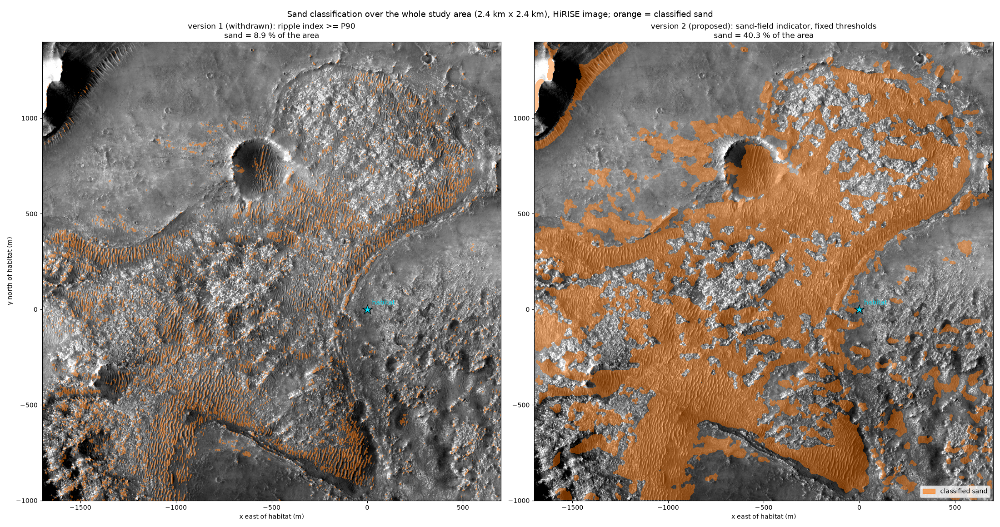
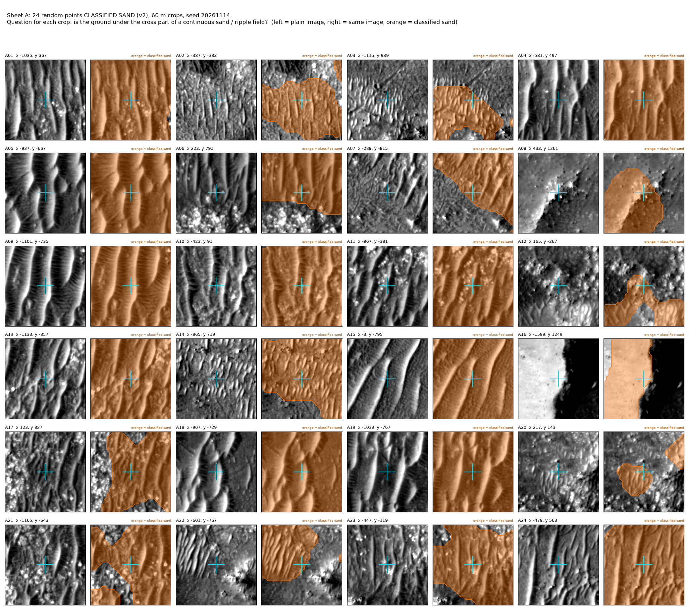
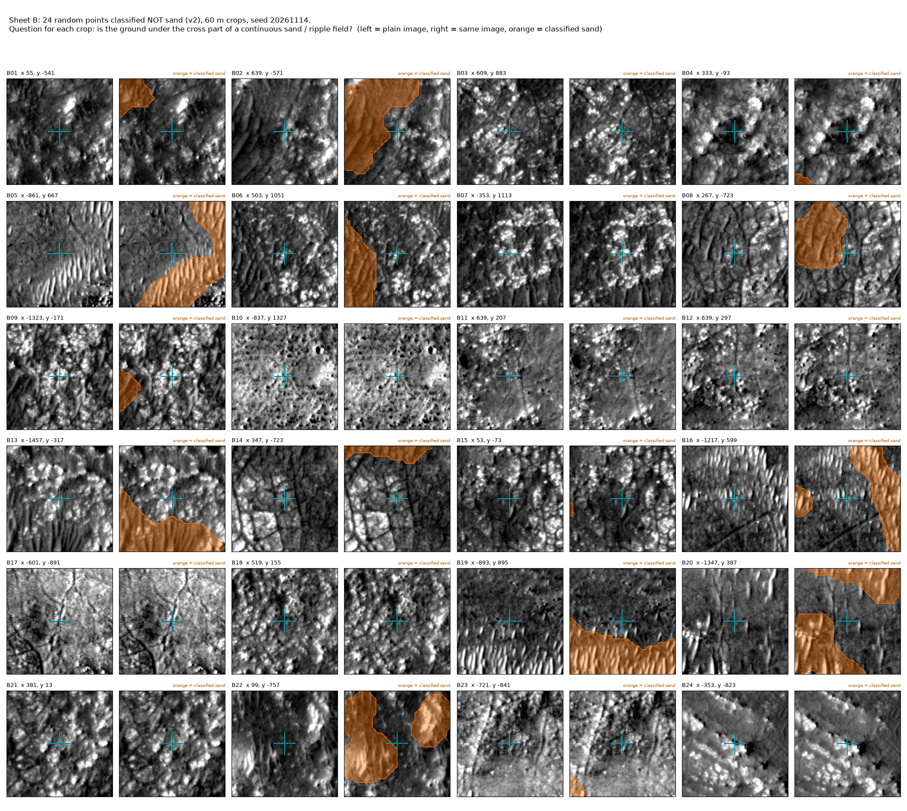
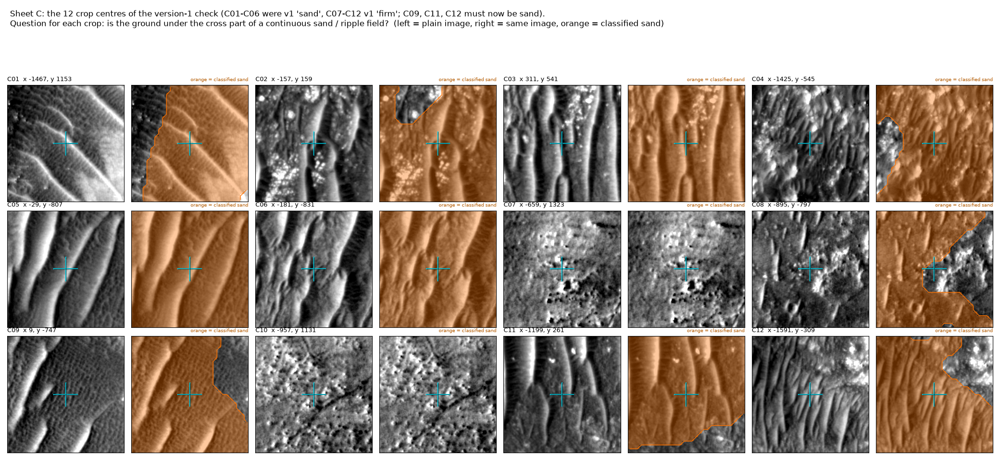

Sand classification check, version 2
Marswalk Recon · Jezero · heuristic, not yet reviewed · seed 20261114
What to answer
- For every small crop (A01–A24, B01–B24, C01–C12): is the ground under the blue cross part of a continuous field of sand ripples? Answer yes / no / unsure. Only list the ones you disagree with the orange fill.
- Each crop is 60 m wide, shown twice: plain image on the left, orange = "classified sand" on the right.
- Pass rule (fixed in advance): sheet B (classified not sand) at most 2 clear "yes"; sheet A (classified sand) at most 4 clear "no"; C09, C11 and C12 must be sand.
Whole study area (2.4 km × 2.4 km)

Sheet A · classified sand

Sheet B · classified not sand

Sheet C · the 12 crops of the version-1 check
